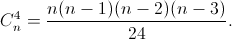

It is known that in a convex n-gon $(n > 3)$ no three diagonals pass through one point. Find the number of points $($other than the vertex$)$ where pairs of diagonals intersect.
Each pair of intersecting diagonals can be associated with a quadruple of vertices of an n-gon, which are the ends of these diagonals.
The condition can be reformulated as follows: it is required to find the number of pairs of intersecting diagonals of a convex n-gon. To each pair of intersecting diagonals, we associate a quadruple of vertices of an n-gon, which are the ends of these diagonals. Conversely, for any four vertices there is exactly one pair of intersecting diagonals whose ends are the four vertices. Thus, the number of pairs of intersecting diagonals is equal to the number of ways to select four vertices from n.
